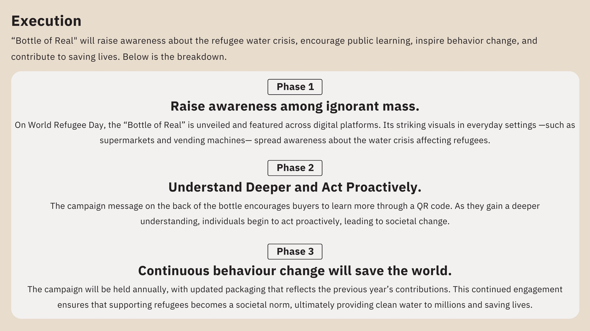
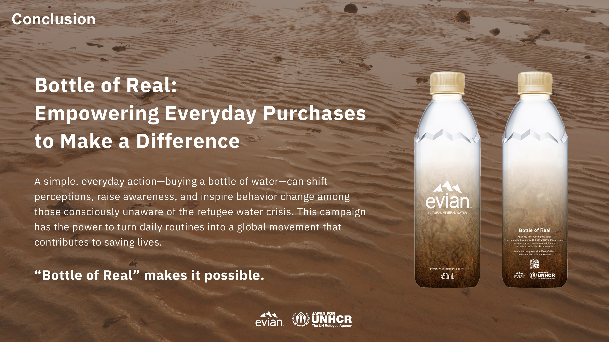
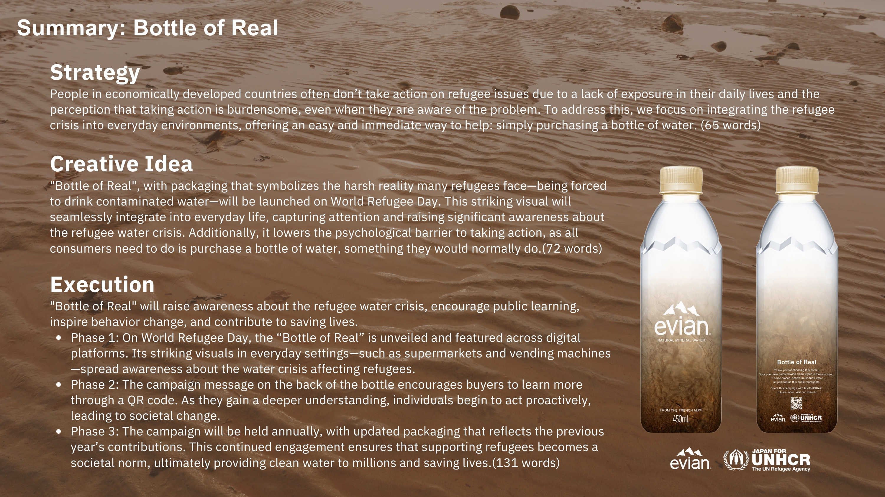
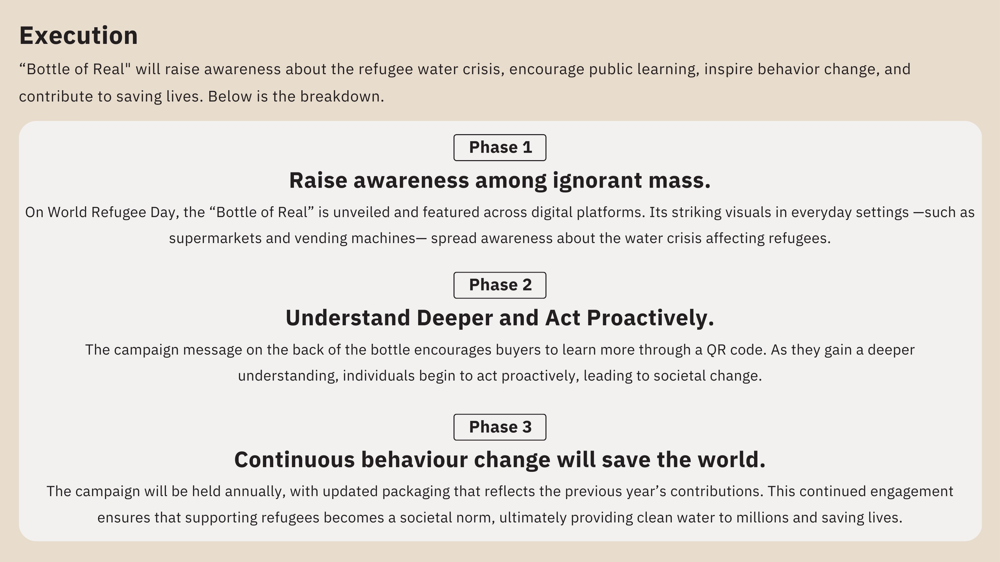
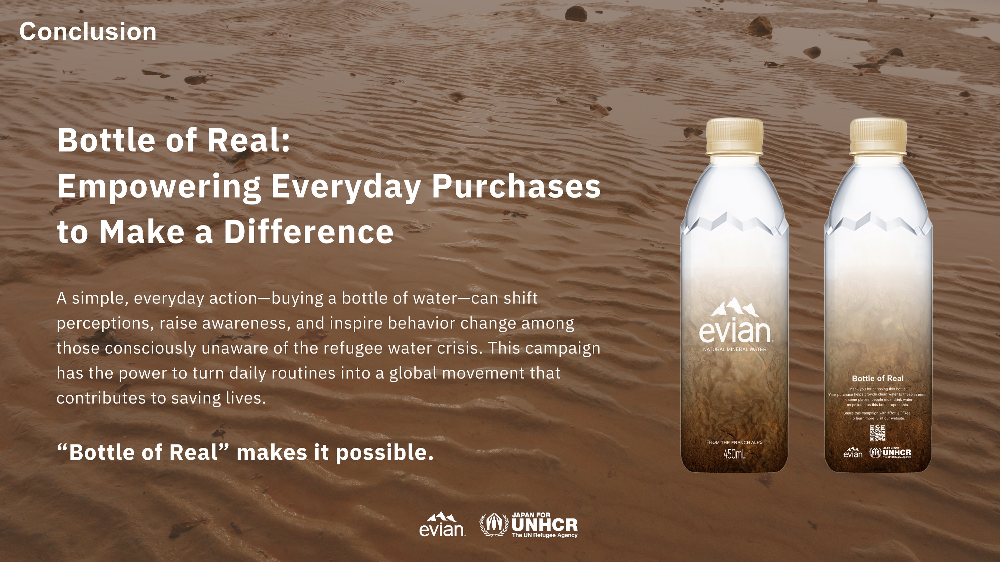
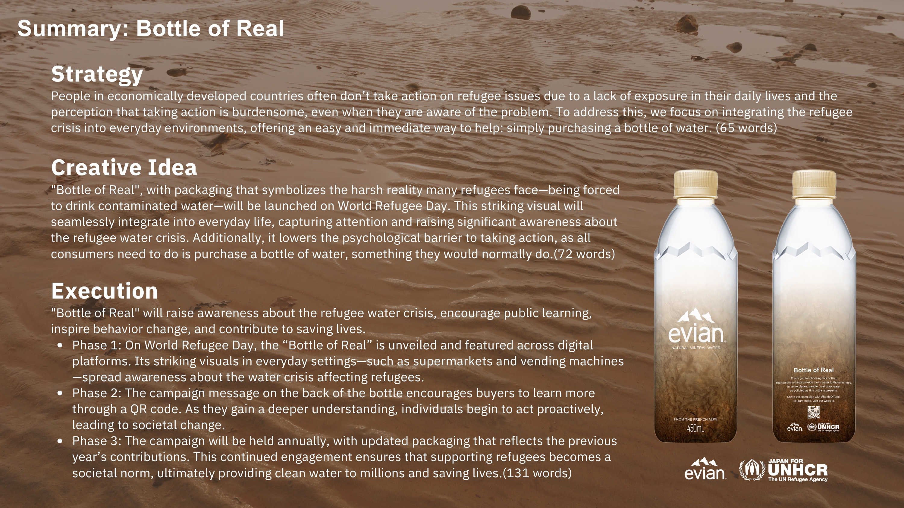

Bottle of Real
Year: 2024
Type: Planing
Prize: Young Cannes Lions 2025 National Media Department, Silver
「世界一の若手広告プランナー」を決める国際コンペティション、ヤングカンヌライオンズ2025のメディア部門・日本国内予選に提出した企画書。ブリーフは、日本を含む先進国の生活者に対して、難民問題への認知を促進し、支援の輪を広げること。
提案したのは、「Bottle of Real」というペットボトル飲料を用いたメディア施策。難民が直面している過酷な現実——泥水や汚染水を飲まざるを得ない状況——をリアルに映し出すパッケージデザインを施し、生活の中に自然に入り込む「水のペットボトル」を新たなメディアとして活用した。日常的に目にするアイテムを通じて、難民の“飲料水問題”という本質的課題を生活者に対して直感的かつインパクトのある形で伝えると同時に、通常商品と同価格・少量設計とすることで生まれる余剰利益を、清潔な水の提供支援に還元するソーシャル・ビジネスプランとして構築した。
This proposal was submitted to the Japan qualifier of the Young Cannes Lions 2025, a global competition to determine the world’s top young advertising planners. The brief called for raising awareness of the global refugee crisis among people in economically developed countries—such as Japan—and expanding the circle of support.
Our idea, titled "Bottle of Real", repurposes a common item in everyday life—a plastic water bottle—as a powerful media touchpoint. The bottle features a raw, impactful design that reflects the harsh reality many refugees face: having to drink contaminated or muddy water to survive.
By visually confronting consumers with this truth in a setting as mundane as a convenience store or office, the concept delivers a quick and emotional understanding of the refugee water crisis. Moreover, the business model is designed so that the product is sold at the same price as a standard bottled water product, but in a smaller volume—allowing the margin difference to be redirected to funding clean water access for refugees.
Ito Hikaru / 伊藤輝
 




